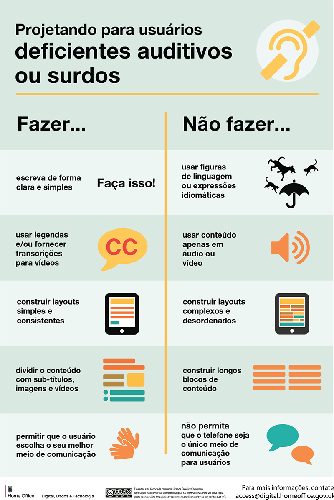

Principais Dificuldades
- Dificuldade com o Português
- O aprendizado da Lingua Portuguesa é uma realidade muito diferente para alunos surdos e ouvintes. Apesar do surdo conseguir decodificar a Língua Portuguesa, ainda possuem dificuldades de compreensão de textos lidos.
- Dificuldade com a falta de legendas e janela de libras
- A falta de legenda em vídeos e da janelas de libras impacta diretamente no entendimento e absorção de vídeos. A janela de libras é definida pela NBR 15.290 como um "espaço delimitado no vídeo onde as informações veiculadas na língua portuguesa são interpretadas para LIBRAS.
- Por conta da dificuldade com o português nem sempre o surdo se sente confortável a ler as legendas e por conta disso se sente excluído de diversas mídias.
- Dificuldade com atendimento para surdos
- A tecnologia já está disponível e acessível para os surdos mas nem sempre é utilizada, as vezes faltam opções de atendimentos para surdos, limitações de atendimento por chat ou e-mail, que impossibilitam o atendimento adequado.
